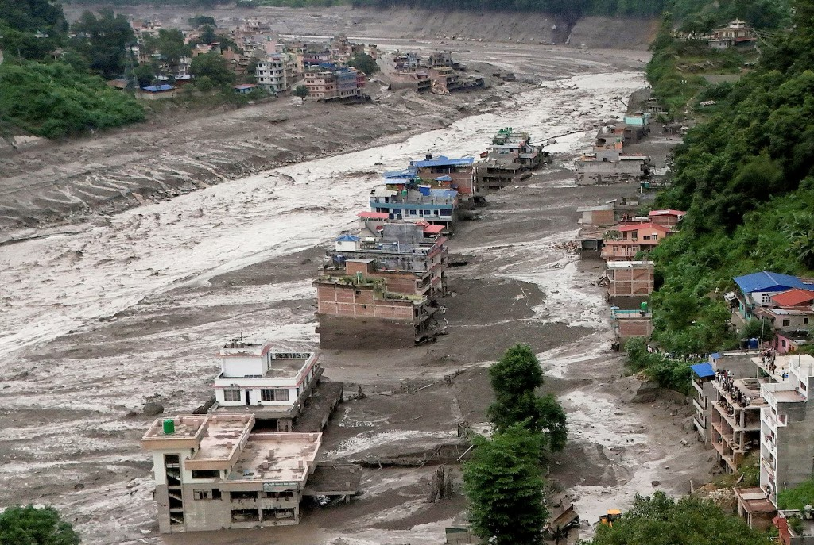

Identify critical points
With our territorial view, we locate and help you address the breaking points on your supply chain.
Assess physical risk and territorial dependencies that can disrupt facilities, supply chains and operations.
For teams responsible for operations, continuity and critical locations.

Our Territorial Exposure Assessment brings a reading on climate and pysical risks, infrastructure, logistics and supply-chain exposure, to enhance operational resilience and business continuity.
The analysis doesn't only cover the plot, it covers:

With our territorial view, we locate and help you address the breaking points on your supply chain.

A data-driven study on risks helps you make decisions to reduce the likelihood of interruption.

The full graded picture and the report scoring results help address vulnerabilities to ensure operational resilience.

Relevant business decisions like new investments or relocations can be taken based on official data and territorial intelligence.

Ensure keeping your positioning in your sector by getting ahead of the risks that can diminish your business delivery.
TEAM — Territorial Exposure Assessment Method
TEAM grades each critical dependency for hazard exposure, operational impact and adaptive capacity — then assigns a management priority. Built for capital and continuity decisions, not as a scientific hazard index.
01
Map the facility and the network it depends on — suppliers, warehouses, routes, services, workforce access, clients. Overlay official hazard and physical-climate information.
02
A structured workshop with Ops, Risk and Supply Chain weighs criticality, alternatives and the nature of the business — with a short rationale recorded for each material rating.
03
For each material dependency, rate the operational effect: disrupt, slow, or limited impact on continuity. Based on workshop information.
04
Convert the rating into one of four management postures: Monitor, Plan, Prioritise, or Act — so the board knows what to fund, defer or do now.
What you receive
One document Ops, Risk and Strategy can open together — grounded in the mapped network, the workshop and the graded ratings.
Every material dependency receives one of four management postures.
Keep the exposure in view and respond after an event.
Address it in a later investment cycle.
Prepare and schedule action, including lined-up alternatives.
Single-point or unacceptable exposure. Act now.
The report sequences where attention should go first. It does not replace detailed engineering, environmental modelling or legal due diligence — it shows where those are worth commissioning.
Before capital is committed to a site that has not been read outside the fence.
To see which locations and dependencies deserve attention first.
When access, power or logistics almost failed and the plot map still looked clean.
The territorial exposure service supports the work of a wide variety of teams within the public and private sectors.


From the insights
Climate-related events affect supply chains at the joints: lost access to sites, forced rerouting of critical goods, suppliers that cannot ship, and manufacturing that slows or stops.
Read the insightThe useful meeting is Operations together with Risk or Strategy. Scope follows the number of facilities, the geography and the workshop required.